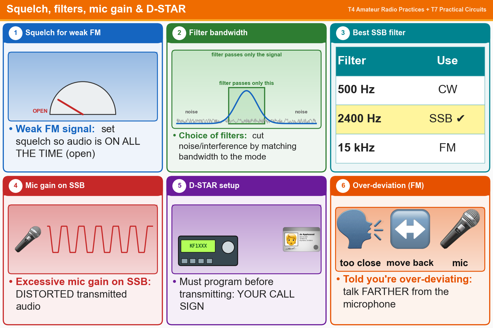

💡 2400 Hz filter for SSB. Too much mic gain = distortion. Over-deviating? Back away from the mic.
📚 Key words
- Squelch threshold
- The level where squelch opens. To hear a very weak signal, set it so the audio stays on all the time.
- Filter bandwidth
- How wide a slice of signal the receiver lets in. Matching it to the mode cuts noise.
- Signal-to-noise ratio
- How much signal versus hiss. For SSB, a 2400 Hz filter is best.
- Hz
- Hertz, cycles per second.
- Mic gain
- Microphone volume. Too much = distorted audio.
- D-STAR
- A digital voice system. You must program your call sign before transmitting.
- Over-deviating
- FM audio too strong (too loud). Talk farther from the mic.
Press Check on any question to see if you're right (it won't show the answer), or Grade at the bottom to grade the whole page.
T4B03
How is squelch adjusted so that a weak FM signal can be heard?
✘A.Turn on the anti-squelch function
✔B.Set the squelch threshold so that receiver output audio is on all the time
✘C.Turn up the audio level until it overcomes the squelch threshold
✘D.Enable squelch enhancement
T4B08
What is the advantage of having a choice of receiver filter bandwidths in a multimode transceiver?
✘A.Permits monitoring several modes simultaneously by selecting a separate filter for each mode
✘B.Increases the number of frequencies that can be stored in memory
✘C.Increases the amount of offset between receive and transmit frequencies
✔D.Permits noise or interference reduction by selecting a bandwidth matching the mode
T4B10
Which of the following receiver filter bandwidths provides the best signal-to-noise ratio for SSB reception?
✘A.500 Hz
✘B.5000 Hz
✔C.2400 Hz
✘D.1000 Hz
T4B01
What is the effect of excessive microphone gain on SSB transmissions?
✘A.Sideband inversion
✘B.Frequency instability
✘C.Increased SWR
✔D.Distorted transmitted audio
T4B11
Which of the following must be programmed into a D-STAR digital transceiver before transmitting?
✘A.The codec type being used
✘B.Your output power
✔C.Your call sign
✘D.All these choices are correct
T7B01
What can you do if you are told your FM handheld or mobile transceiver is over-deviating?
✘A.Talk louder into the microphone
✘B.Let the transceiver cool off
✔C.Talk farther away from the microphone
✘D.Change to a higher power level